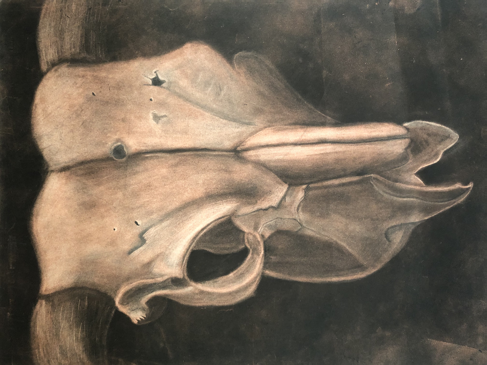
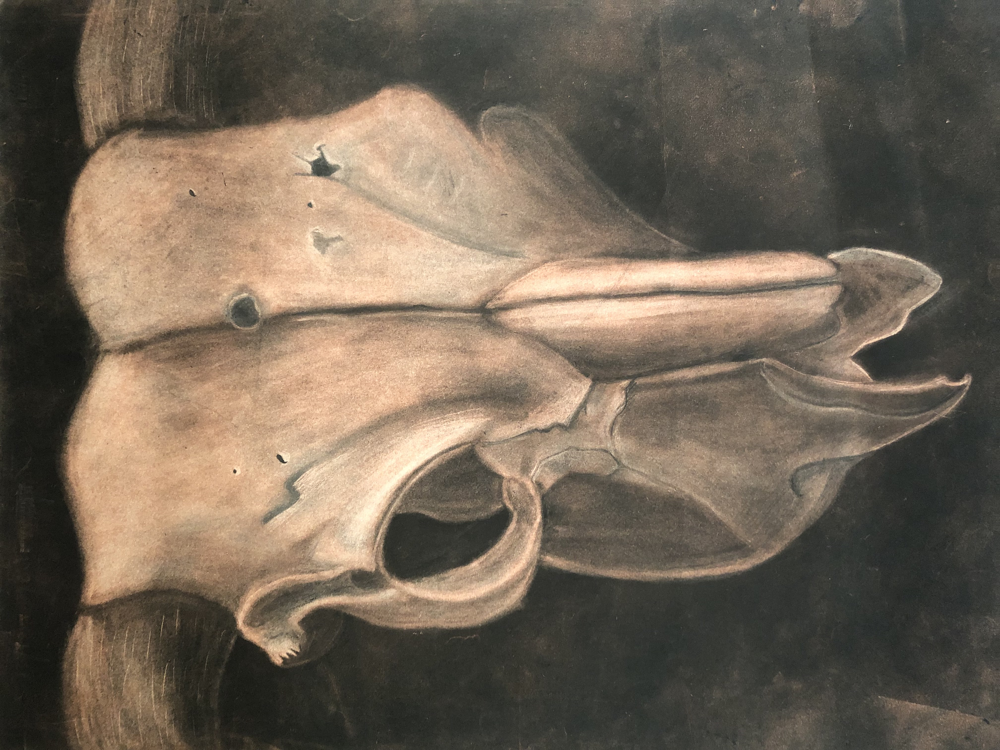

Sketch
Dimension: 18 x 24 in
Medium: Graphite
Description - Sketch for Minotaur's Remains
Minotaur's Remains
Dimension: 18 x 24 in
Medium: Red and Black Charcoal
Description - Skull of the infamous creature that was trapped in a labrynth for eternity, until slain.
Textured Shepherd
Dimension: 18 x 24 in
Medium: Graphite
Description - A mosaic of a german shepherd created by using a multitude of textured patterns.
 
